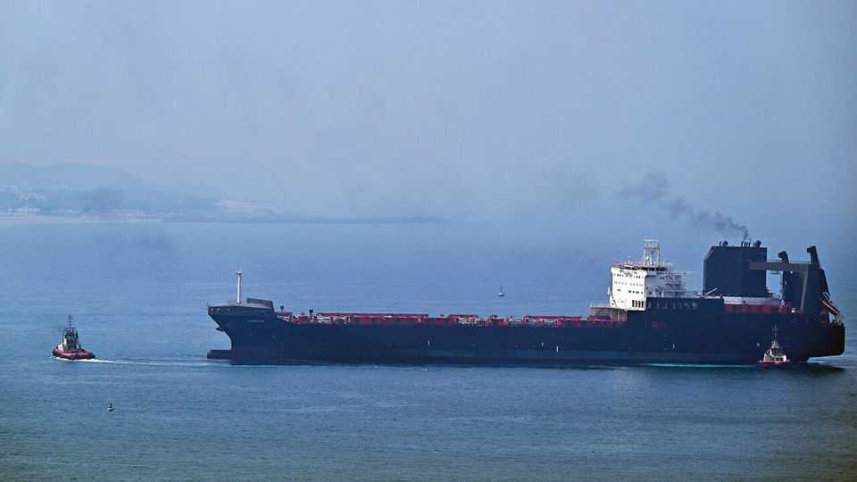

Donald Trump’s blind alley
America’s president looks bereft of good options for solving the stand-off in the Gulf
July 16th 2026

WHEN DONALD TRUMP proposed peace with Iran, he could hardly have offered better terms. In return for Iran opening the Strait of Hormuz and forswearing all ambitions for a nuclear bomb, America held out the prospect of hundreds of billions of dollars of income and investment in an economy ravaged by sanctions and war. The horrified reaction of Iran hawks in America and Israel tells you that no other American leader would have surrendered so much.
The bleak message from the upsurge in fighting over the past week is that, for Iran, money alone is not enough. The hardliners are in charge. They want something more, and it cannot be good—be it revenge, control over the strait, regional dominance or a nuclear programme. America must not yield.
The memorandum of understanding (MoU), signed a month ago, allows 60 days to bring peace. Halfway through, it has itself become the focus of conflict. It asks Iran to “make arrangements to ensure the safe passage of commercial vessels free of charge for 60 days”. Iran takes that to imply it is in charge; for America it means that Iran must not restrict sea traffic.
The two sides are exchanging missile and drone strikes, and tankers are wary of sailing even with American offers of protection. Thankfully, these military exchanges have so far stopped short of a return to war. But the oil price is creeping back up. Meanwhile, there has been no progress in talks on tricky matters, including nuclear materials and Iranian efforts to enrich uranium.
After decades of hostility, trust between America and Iran is in desperately short supply. But America was honouring its side of the MoU, by allowing Iranian oil to be sold on international markets. If ever the two countries might have been able to put relations on a more steady footing, this was the moment.
Moderates in Tehran (a relative term) are said to grasp what a favourable offer they had. But the hardliners won the argument. The new supreme leader, Mojtaba Khamenei, remains unseen, but his pronouncements are hardline, too. Either he agrees with squeezing America for more, or he is under the thumb of those who want war.
Mr Trump seems to have no plan. This week he said America would itself start levying tolls on ships in the strait, until wiser heads in the administration pointed out how foolish that idea was. Thankfully he reversed it.
He has also issued more threats to destroy Iranian bridges and energy plants. But a return to all-out war does not hold much promise. After all, the intense fighting in February was supposed to topple the regime, but ended up strengthening its hardliners. The president also drops hints about sending in troops to seize Kharg island, the export terminal for almost all of Iran’s oil. American forces on Kharg would be a sitting target for Iranian missiles and drones.
Giving Iran what it wants would be terrible, too. Acquiescing to its control of international waters in the Gulf would not only be bad in itself, but would set a dire precedent. Abandoning Gulf countries to Iran’s predations would be against America’s direct interests and send a bad signal to allies everywhere. And Iran’s nuclear programme poses a real danger that needs close monitoring and control by international inspectors.
The options are not good, therefore. All of them involve demonstrating to Iran’s hardliners that America has the resolve to impose a sustained blockade on Iranian oil exports—even if that raises the price of petrol before the midterm elections in November. America has restored the embargo against Iran, which is a start. To show its will, it should also continue to match Iranian strikes. Mr Trump made a foolish mistake by starting this war. However much he twists and turns, he now has little choice but to stick it out. ■
Subscribers to The Economist can sign up to our Opinion newsletter, which brings together the best of our leaders, columns, guest essays and reader correspondence.